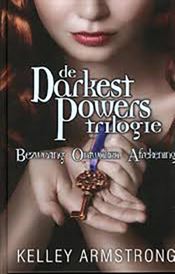

The Darkest Powers Trilogy
After years of frequent moves following her mother’s death, Chloe Saunders’s life is finally settling down. She is attending art school, pursuing her dreams of becoming a director, making friends, meeting boys. Her biggest concern is that she’s not developing as fast as her friends are. But when puberty does hit, it brings more than hormone surges. Chloe starts seeing ghosts–everywhere, demanding her attention. After she suffers a breakdown, her devoted aunt Lauren gets her into a highly recommended group home.
At first, Lyle House seems a pretty okay place, except for Chloe’s small problem of fearing she might be facing a lifetime of mental illness. But as she gradually gets to know the other kids at the home–charming Simon and his ominous, unsmiling brother Derek, obnoxious Tori, and Rae, who has a “thing” for fire–Chloe begins to realize that there is something that binds them all together, and it isn’t your usual “problem kid” behaviour. And together they discover that Lyle House is not your usual group home either…